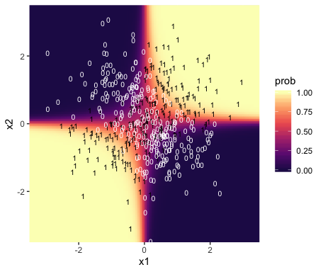
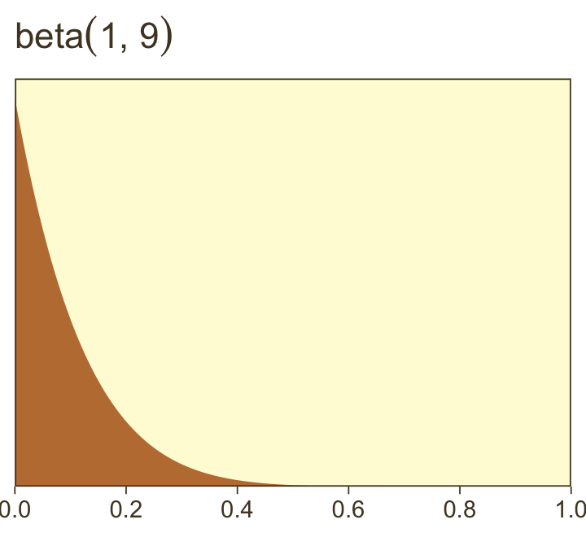
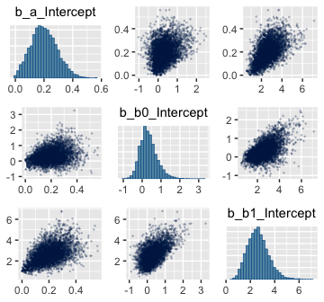

21 Dichotomous Predicted Variable
This chapter considers data structures that consist of a dichotomous predicted variable. The early chapters of the book were focused on this type of data, but now we reframe the analyses in terms of the generalized linear model…
The traditional treatment of these sorts of data structure is called “logistic regression.” In Bayesian software it is easy to generalize the traditional models so they are robust to outliers, allow different variances within levels of a nominal predictor, and have hierarchical structure to share information across levels or factors as appropriate. (pp. 621–622)
21.1 Multiple metric predictors
“We begin by considering a situation with multiple metric predictors, because this case makes it easiest to visualize the concepts of logistic regression” (p. 623).
Figure 21.1 is beyond the scope of our ggplot2 paradigm. But we will discuss an alternative in the end of section 21.1.2.
21.1.1 The model and implementation in JAGS brms.
Our statistical model will follow the form
\[\begin{align*} \mu & = \operatorname{logistic} (\beta_0 + \beta_1 x_1 + \beta_2 x_2) \\ y & \sim \operatorname{Bernoulli} (\mu) \end{align*}\]
where
\[\operatorname{logistic} (x) = \frac{1}{(1 + \exp (-x))}.\]
The generic brms code for logistic regression using the Bernoulli likelihood looks like so.
fit <-
brm(data = my_data,
family = bernoulli,
y ~ 1 + x1 + x2,
prior = c(prior(normal(0, 2), class = Intercept),
prior(normal(0, 2), class = b)))Note that this syntax presumes the predictor variables have already been standardized.
We’d be remiss not to point out that you can also specify the model using the binomial distribution. That code would look like this.
fit <-
brm(data = my_data,
family = binomial,
y | trials(1) ~ 1 + x1 + x2,
prior = c(prior(normal(0, 2), class = Intercept),
prior(normal(0, 2), class = b)))And the results of these two should be the same as long as the dara are not aggregated. In brms, the default link for both family = bernoulli and family = binomial models is logit, which is exactly what we want, here. Also, note the additional | trials(1) syntax on the left side of the model formula. You could get away with omitting this in older versions of brms. But newer versions bark at you to specify how many of trials each row in the data represents. This is because, as with the baseball data we’ll use later in the chapter, the binomial distribution includes an \(n\) parameter. When working with un-aggregated data like what we’re about to do, below, it’s presumed that \(n = 1\).
21.1.2 Example: Height, weight, and gender.
Load the height/weight data.
## Observations: 110
## Variables: 3
## $ male <dbl> 0, 0, 0, 0, 1, 1, 1, 0, 1, 0, 1, 1, 1, 1, 1, 1, 0, 1, 0, 1, 0, 1, 0, 1, 0, 1, 0, 1…
## $ height <dbl> 63.2, 68.7, 64.8, 67.9, 68.9, 67.8, 68.2, 64.8, 64.3, 64.7, 66.9, 66.9, 67.1, 70.2…
## $ weight <dbl> 168.7, 169.8, 176.6, 246.8, 151.6, 158.0, 168.6, 137.2, 177.0, 128.0, 168.4, 136.2…Let’s standardize our predictors.
my_data <-
my_data %>%
mutate(height_z = (height - mean(height)) / sd(height),
weight_z = (weight - mean(weight)) / sd(weight))Before we fit a model, we might take a quick look at the data. The ggMarginal() function from the ggExtra package will be of help, here.
Here we make a scatter plot with marginal densities.
p <-
my_data %>%
ggplot(aes(x = weight, y = height, fill = male == 1)) +
geom_point(aes(color = male == 1),
alpha = 2/3) +
scale_color_manual(values = c("red4", "blue4")) +
scale_fill_manual(values = c("red4", "blue4")) +
theme(panel.grid = element_blank(),
legend.position = "none")
p %>%
ggMarginal(data = my_data,
groupFill = T,
type = 'density',
color = "transparent")
Looks like the data for which male == 1 are concentrated in the upper right and those for which male == 0 are more so in the lower left. What we’d like is a model that would tell us the optimal dividing line(s) between our male categories with respect to those predictor variables.
Open brms.
Our first logistic model with family = bernoulli uses only weight_z as a predictor.
fit1 <-
brm(data = my_data,
family = bernoulli,
male ~ 1 + weight_z,
prior = c(prior(normal(0, 2), class = Intercept),
prior(normal(0, 2), class = b)),
iter = 2500, warmup = 500, chains = 4, cores = 4,
seed = 21)Here’s the model summary.
## Family: bernoulli
## Links: mu = logit
## Formula: male ~ 1 + weight_z
## Data: my_data (Number of observations: 110)
## Samples: 4 chains, each with iter = 2500; warmup = 500; thin = 1;
## total post-warmup samples = 8000
##
## Population-Level Effects:
## Estimate Est.Error l-95% CI u-95% CI Rhat Bulk_ESS Tail_ESS
## Intercept -0.08 0.21 -0.50 0.32 1.00 6358 5436
## weight_z 1.18 0.28 0.66 1.74 1.00 5678 4925
##
## Samples were drawn using sampling(NUTS). For each parameter, Eff.Sample
## is a crude measure of effective sample size, and Rhat is the potential
## scale reduction factor on split chains (at convergence, Rhat = 1).Now let’s get ready to make our version of Figure 21.3. First, we need to do some fitted()-oriented wrangling.
length <- 200
n_iter <- 20
nd <- tibble(weight_z = seq(from = -2, to = 3.5, length.out = length))
f <-
fitted(fit1,
newdata = nd,
summary = F,
nsamples = n_iter) %>%
as_tibble() %>%
mutate(iter = 1:n_iter) %>%
pivot_longer(-iter) %>%
mutate(weight_z = rep(nd$weight_z, times = n_iter)) %>%
mutate(weight = weight_z * sd(my_data$weight) + mean(my_data$weight))
head(f)## # A tibble: 6 x 5
## iter name value weight_z weight
## <int> <chr> <dbl> <dbl> <dbl>
## 1 1 V1 0.0835 -2 87.0
## 2 1 V2 0.0859 -1.97 88.0
## 3 1 V3 0.0884 -1.94 88.9
## 4 1 V4 0.0909 -1.92 89.9
## 5 1 V5 0.0936 -1.89 90.9
## 6 1 V6 0.0962 -1.86 91.9Here’s a tricky way to get the threshold values.
Using those thresholds, here’s our version of the top panel of Figure 21.3.
f %>%
ggplot(aes(x = weight)) +
geom_hline(yintercept = .5, color = "white", size = 1/2) +
geom_vline(xintercept = thresholds$weight, color = "white", size = 2/5) +
geom_line(aes(y = value, group = iter),
color = "grey50", size = 1/3, alpha = 2/3) +
geom_point(data = my_data,
aes(y = male),
alpha = 1/3) +
labs(title = "Data with Post. Pred.",
y = "male") +
coord_cartesian(xlim = range(my_data$weight)) +
theme(panel.grid = element_blank())
Here we show the marginal distributions in our versions of the lower panels of Figure 21.3.
library(tidybayes)
# extract the draws
post <-
posterior_samples(fit1) %>%
# convert the parameter draws to their natural metric following Equation 21.1
transmute(Intercept = b_Intercept - (b_weight_z * mean(my_data$weight) / sd(my_data$weight)),
weight = b_weight_z / sd(my_data$weight)) %>%
pivot_longer(everything())
# plot
post %>%
ggplot(aes(x = value)) +
geom_histogram(color = "grey92", fill = "grey67",
size = .2, bins = 40) +
stat_pointintervalh(aes(y = 0),
point_interval = mode_hdi, .width = c(.95, .5)) +
scale_y_continuous(NULL, breaks = NULL) +
xlab(NULL) +
theme(panel.grid = element_blank()) +
facet_wrap(~name, scales = "free", ncol = 2)
And here are those exact posterior mode and 95% HDI values.
## # A tibble: 2 x 7
## name value .lower .upper .width .point .interval
## <chr> <dbl> <dbl> <dbl> <dbl> <chr> <chr>
## 1 Intercept -5.17 -7.78 -2.96 0.95 mode hdi
## 2 weight 0.033 0.018 0.048 0.95 mode hdiNow fit the two-predictor model using both weight_z and height_z
fit2 <-
brm(data = my_data,
family = bernoulli,
male ~ 1 + weight_z + height_z,
prior = c(prior(normal(0, 2), class = Intercept),
prior(normal(0, 2), class = b)),
iter = 2500, warmup = 500, chains = 4, cores = 4,
seed = 21)Here’s the model summary.
## Family: bernoulli
## Links: mu = logit
## Formula: male ~ 1 + weight_z + height_z
## Data: my_data (Number of observations: 110)
## Samples: 4 chains, each with iter = 2500; warmup = 500; thin = 1;
## total post-warmup samples = 8000
##
## Population-Level Effects:
## Estimate Est.Error l-95% CI u-95% CI Rhat Bulk_ESS Tail_ESS
## Intercept -0.35 0.30 -0.97 0.21 1.00 5701 4430
## weight_z 0.67 0.35 -0.01 1.38 1.00 6570 5203
## height_z 2.62 0.51 1.71 3.71 1.00 5721 4092
##
## Samples were drawn using sampling(NUTS). For each parameter, Eff.Sample
## is a crude measure of effective sample size, and Rhat is the potential
## scale reduction factor on split chains (at convergence, Rhat = 1).Before we make our plots for Figure 21.4, we’ll need to extract the posterior samples and transform a little.
post <-
posterior_samples(fit2) %>%
transmute(b_weight = b_weight_z / sd(my_data$weight),
b_height = b_height_z / sd(my_data$height),
Intercept = b_Intercept - ((b_weight_z * mean(my_data$weight) / sd(my_data$weight)) +
(b_height_z * mean(my_data$height) / sd(my_data$height))))
head(post)## b_weight b_height Intercept
## 1 0.018166700 0.7321485 -51.60400
## 2 0.019467097 0.4831885 -35.37444
## 3 0.011662826 0.9272223 -64.27622
## 4 0.007602754 1.0011093 -68.24517
## 5 0.003033513 0.8470679 -57.08786
## 6 0.029017547 0.5890523 -44.33986Here’s our version of Figure 21.4.a.
set.seed(21) # we need this for the `sample_n()` function
post %>%
mutate(iter = 1:n()) %>%
sample_n(size = 20) %>%
expand(nesting(iter, Intercept, b_weight, b_height),
weight = c(80, 280)) %>%
# this follows the Equation near the top of p. 629
mutate(height = (-Intercept / b_height) + (-b_weight / b_height) * weight) %>%
# now plot
ggplot(aes(x = weight, y = height)) +
geom_line(aes(group = iter),
color = "white", size = 2/5) +
geom_text(data = my_data,
aes(label = male, color = male == 1)) +
scale_color_manual(values = c("red4", "blue4")) +
ggtitle("Data with Post. Pred.") +
coord_cartesian(xlim = range(my_data$weight),
ylim = range(my_data$height)) +
theme(panel.grid = element_blank(),
legend.position = "none")
With just a tiny bit more wrangling, we’ll be ready to make the bottom panels of Figure 21.4.
post %>%
pivot_longer(everything()) %>%
mutate(name = factor(str_remove(name, "b_"),
levels = c("Intercept", "weight", "height"))) %>%
ggplot(aes(x = value)) +
geom_histogram(color = "grey92", fill = "grey67",
size = .2, bins = 40) +
stat_pointintervalh(aes(y = 0),
point_interval = mode_hdi, .width = c(.95, .5)) +
scale_y_continuous(NULL, breaks = NULL) +
xlab(NULL) +
theme(panel.grid = element_blank()) +
facet_wrap(~name, scales = "free", ncol = 3)
By now, you know how to use mode_hdi() to return those exact summary values if you’d like them.
Now remember how we backed away from Figure 21.1? Well, when you have a logistic regression with two predictors, there is a reasonable way to express those three dimensions on a two-dimensional grid. Now we have the results from fit2, let’s try it out.
First, we need a grid of values for our two predictors, weight_z and height_z.
length <- 100
nd <-
crossing(weight_z = seq(from = -3.5, to = 3.5, length.out = length),
height_z = seq(from = -3.5, to = 3.5, length.out = length))Second, we plug those values into fitted() and wrangle.
f <-
fitted(fit2,
newdata = nd,
scale = "linear") %>%
as_tibble() %>%
# note we're only working with the posterior mean, here
transmute(prob = Estimate %>% inv_logit_scaled()) %>%
bind_cols(nd) %>%
mutate(weight = (weight_z * sd(my_data$weight) + mean(my_data$weight)),
height = (height_z * sd(my_data$height) + mean(my_data$height)))
glimpse(f)## Observations: 10,000
## Variables: 5
## $ prob <dbl> 7.096100e-06, 8.540527e-06, 1.027897e-05, 1.237127e-05, 1.488945e-05, 1.792021e-…
## $ weight_z <dbl> -3.5, -3.5, -3.5, -3.5, -3.5, -3.5, -3.5, -3.5, -3.5, -3.5, -3.5, -3.5, -3.5, -3…
## $ height_z <dbl> -3.500000, -3.429293, -3.358586, -3.287879, -3.217172, -3.146465, -3.075758, -3.…
## $ weight <dbl> 33.45626, 33.45626, 33.45626, 33.45626, 33.45626, 33.45626, 33.45626, 33.45626, …
## $ height <dbl> 53.24736, 53.51234, 53.77731, 54.04229, 54.30727, 54.57224, 54.83722, 55.10219, …Third, we’re ready to plot. Here we’ll express the third dimension, probability, on a color spectrum.
f %>%
ggplot(aes(x = weight, y = height)) +
geom_raster(aes(fill = prob),
interpolate = T) +
geom_text(data = my_data,
aes(label = male, color = male == 1),
show.legend = F) +
scale_color_manual(values = c("white", "black")) +
scale_fill_viridis_c(option = "A", begin = .1, limits = c(0, 1)) +
scale_y_continuous(position = "right") +
coord_cartesian(xlim = range(my_data$weight),
ylim = range(my_data$height)) +
theme(legend.position = "left")
If you look way back to Figure 21.1, you’ll see the following formula at the top,
\[y \sim \operatorname{dbern} (m), m = \operatorname{logistic} (0.018 x_1 + 0.7 x_2 - 50).\]
Now while you keep your finger on that equation, take another look at the last line in Kruschke’s Equation 21.1,
\[ \operatorname{logit} (\mu) = \underbrace{\zeta_0 - \sum_j \frac{\zeta_j}{s_{x_j}} \overline x_j}_{\beta_0} + \sum_j \underbrace{\frac{\zeta_j}{s_{x_j}} \overline x_j}_{\beta_j}, \]
where the \(\zeta\)s are the parameters from the model based on standardized predictors. Our fit2 was based on standardized weight and height values (i.e., weight_z and height_z), yielding model coefficients in the \(\zeta\) metric. Here we use the formula above to convert our fit2 estimates to their unstandardized \(\beta\) metric. For simplicity, we’ll just take their means.
posterior_samples(fit2) %>%
transmute(beta_0 = b_Intercept - ((b_weight_z * mean(my_data$weight) / sd(my_data$weight)) +
((b_height_z * mean(my_data$height) / sd(my_data$height)))),
beta_1 = b_weight_z / sd(my_data$weight),
beta_2 = b_height_z / sd(my_data$height)) %>%
summarise_all(~mean(.) %>% round(., digits = 3))## beta_0 beta_1 beta_2
## 1 -49.713 0.019 0.699Within rounding error, those values are the same ones in the formula at the top of Kruschke’s Figure 21.1! That is, our last plot was a version of Figure 21.1.
Hopefully this helps make sense of what the thresholds in Figure 21.4.a represented. But do note a major limitation of this visualization approach. By expressing the threshold by multiple lines drawn from the posterior in Figure 21.4.a, we expressed the uncertainty inherent in the posterior distribution. However, for this probability plane approach, we’ve taken a single value from the posterior, the mean (i.e., the Estimate), to compute the probabilities. Though beautiful, our probability-plane plot does a poor job expressing the uncertainty in the model.
21.2 Interpreting the regression coefficients
In this section, I’ll discuss how to interpret the parameters in logistic regression. The first subsection explains how to interpret the numerical magnitude of the slope coefficients in terms of “log odds.” The next subsection shows how data with relatively few 1’s or 0’s can yield ambiguity in the parameter estimates. Then an example with strongly correlated predictors reveals tradeoffs in slope coefficients. Finally, I briefly describe the meaning of multiplicative interaction for logistic regression. (p. 629)
21.2.1 Log odds.
When the logistic regression formula is written using the logit function, we have \(\operatorname{logit} (\mu) = \beta_0 + \beta_1 x_1 + \beta_2 x_2\). The formula implies that whenever \(x_1\) goes up by 1 unit (on the \(x_1\) scale), then \(\operatorname{logit} (\mu)\) goes up by an amount \(\beta_1\). And whenever \(x_2\) goes up by 1 unit (on the \(x_2\) scale), then \(\operatorname{logit} (\mu)\) goes up by an amount \(\beta_2\). Thus, the regression coefficients are telling us about increases in \(\operatorname{logit} (\mu)\). To understand the regression coefficients, we need to understand \(\operatorname{logit} (\mu)\). (pp. 629–630)
Given the logit function is the inverse of the logistic, which itself is
\[\operatorname{logistic} (x) = \frac{1}{1 + \exp (−x)},\]
and given the formula
\[\operatorname{logit} (\mu) = \log \bigg (\frac{\mu}{1 - \mu} \bigg), \]
where
\[0 < \mu < 1, \]
it may or may not be clear that the results of our logistic regression models have a nonlinear relation with the actual parameter of interest, \(\mu\), which, recall, is the probability our criterion variable is 1 (e.g., male == 1). To get a sense of that nonlinear relation, we might make a plot.
tibble(mu = seq(from = 0, to = 1, length.out = 200)) %>%
mutate(logit_mu = log(mu / (1 - mu))) %>%
ggplot(aes(x = mu, y = logit_mu)) +
geom_line() +
labs(x = expression(paste(mu, " (i.e., the probability space)")),
y = expression(paste("logit (", mu, ") (i.e., the parameter space)"))) +
theme(panel.grid = element_blank(),
legend.position = "none")
So whereas our probability space is bound between 0 and 1, the parameter space shoots off into negative and positive infinity. Also,
\[\operatorname{logit} (\mu) = \log \Bigg (\frac{p(y = 1)}{p(y = 0)} \Bigg )\]
Thus, “the ratio, \(p(y = 1) / p(y = 0)\), is called the odds of outcome 1 to outcome 0, and therefore \(\operatorname{logit} (\mu)\) is the log odds of outcome 1 to outcome 0” (p. 630).
Here’s a tibble layout of the height/weight examples in the middle of page 630.
tibble(b0 = -50,
b1 = .02,
b2 = .7,
weight = 160,
inches = c(63:64, 67:68)) %>%
mutate(logit_mu = b0 + b1 * weight + b2 * inches) %>%
mutate(log_odds = logit_mu) %>%
mutate(p_male = 1 / (1 + exp(-log_odds)))## # A tibble: 4 x 8
## b0 b1 b2 weight inches logit_mu log_odds p_male
## <dbl> <dbl> <dbl> <dbl> <int> <dbl> <dbl> <dbl>
## 1 -50 0.02 0.7 160 63 -2.7 -2.7 0.0630
## 2 -50 0.02 0.7 160 64 -2 -2 0.119
## 3 -50 0.02 0.7 160 67 0.1 0.1 0.525
## 4 -50 0.02 0.7 160 68 0.800 0.800 0.69021.2.2 When there are few 1’s or 0’s in the data.
In logistic regression, you can think of the parameters as describing the boundary between the 0’s and the 1’s. If there are many 0’s and 1’s, then the estimate of the boundary parameters can be fairly accurate. But if there are few 0’s or few 1’s, the boundary can be difficult to identify very accurately, even if there are many data points overall. (p. 631)
As far as I can tell, Kruschke must have used \(n = 500\) to simulate the data he displayed in Figure 21.5. Using the coefficient values he displayed in the middle of page 631, here’s an attempt at replicating them.
b0 <- -3
b1 <- 1
n <- 500
set.seed(21)
d_rare <-
tibble(x = rnorm(n, mean = 0, sd = 1)) %>%
mutate(mu = b0 + b1 * x) %>%
mutate(y = rbinom(n, size = 1, prob = 1 / (1 + exp(-mu))))
glimpse(d_rare)## Observations: 500
## Variables: 3
## $ x <dbl> 0.793013171, 0.522251264, 1.746222241, -1.271336123, 2.197389533, 0.433130777, -1.5701…
## $ mu <dbl> -2.2069868, -2.4777487, -1.2537778, -4.2713361, -0.8026105, -2.5668692, -4.5701996, -3…
## $ y <int> 1, 1, 0, 0, 0, 0, 0, 0, 0, 0, 0, 0, 0, 0, 0, 0, 0, 0, 0, 0, 0, 0, 0, 0, 0, 1, 0, 0, 0,…We’re ready to fit the model. So far, we’ve been following along with Kruschke by using the Bernoulli distribution (i.e., family = bernoulli) in our brms models. Let’s get frisky and use the \(n = 1\) binomial distribution, here. You’ll see it yields the same results.
fit3 <-
brm(data = d_rare,
family = binomial,
y | trials(1) ~ 1 + x,
prior = c(prior(normal(0, 2), class = Intercept),
prior(normal(0, 2), class = b)),
iter = 2500, warmup = 500, chains = 4, cores = 4,
seed = 21)Recall that when you use the binomial distribution in newer versions of brms, you need to use the trials() syntax to tell brm() how many trials each row in the data corresponds to. Anyway, behold the summary.
## Family: binomial
## Links: mu = logit
## Formula: y | trials(1) ~ 1 + x
## Data: d_rare (Number of observations: 500)
## Samples: 4 chains, each with iter = 2500; warmup = 500; thin = 1;
## total post-warmup samples = 8000
##
## Population-Level Effects:
## Estimate Est.Error l-95% CI u-95% CI Rhat Bulk_ESS Tail_ESS
## Intercept -3.01 0.24 -3.50 -2.56 1.00 2895 3993
## x 1.03 0.20 0.63 1.43 1.00 3047 3790
##
## Samples were drawn using sampling(NUTS). For each parameter, Eff.Sample
## is a crude measure of effective sample size, and Rhat is the potential
## scale reduction factor on split chains (at convergence, Rhat = 1).Looks like the model did a good job recapturing those data-generating b0 and b1 values. Here’s the preparatory work to needed before we can make our version of the main plot in Figure 21.5.a.
# unclear if Kruschke still used 20 draws or not
# perhaps play with `n_iter` values.
n_iter <- 20
length <- 100
nd <- tibble(x = seq(from = -3.5, to = 3.5, length.out = length))
# these will make the logistic curves
set.seed(21)
f <-
fitted(fit3,
newdata = nd,
summary = F,
nsamples = n_iter) %>%
as_tibble() %>%
pivot_longer(everything(),
values_to = "y") %>%
mutate(x = rep(nd$x, times = n_iter),
iter = rep(1:n_iter, each = length))
# Here's just a little more work to get the thresholds
thresholds <-
f %>%
filter(y < .5) %>%
group_by(iter) %>%
filter(y == max(y))We’re ready to plot the top left panel of Figure 21.5.
f %>%
ggplot(aes(x = x, y = y)) +
geom_hline(yintercept = .5, color = "white") +
geom_vline(xintercept = thresholds$x, color = "white", size = 2/5) +
geom_line(aes(group = iter),
color = "grey50", alpha = 2/3, size = 1/3) +
geom_point(data = d_rare,
alpha = 1/5) +
scale_x_continuous(breaks = -3:3) +
ggtitle("Data with Post. Pred.") +
coord_cartesian(xlim = -3:3) +
theme(panel.grid = element_blank())
Here are the two subplots at the bottom, left.
posterior_samples(fit3) %>%
transmute(Intercept = b_Intercept,
x = b_x) %>%
pivot_longer(everything()) %>%
ggplot(aes(x = value)) +
geom_histogram(color = "grey92", fill = "grey67",
size = .2, bins = 40) +
stat_pointintervalh(aes(y = 0),
point_interval = mode_hdi, .width = c(.95, .5)) +
scale_y_continuous(NULL, breaks = NULL) +
xlab(NULL) +
theme(panel.grid = element_blank()) +
facet_wrap(~name, scales = "free", ncol = 2)
Since our data were simulated without the benefit of knowing how Kruschke set his seed and such, our results will only approximate those in the text.
Okay, now we need to simulate the complimentary data, those for which \(y = 1\) is a less-rare event.
b0 <- 0
b1 <- 1
n <- 500
set.seed(21)
d_not_rare <-
tibble(x = rnorm(n, mean = 0, sd = 1)) %>%
mutate(mu = b0 + b1 * x) %>%
mutate(y = rbinom(n, size = 1, prob = 1 / (1 + exp(-mu))))
glimpse(d_not_rare)## Observations: 500
## Variables: 3
## $ x <dbl> 0.793013171, 0.522251264, 1.746222241, -1.271336123, 2.197389533, 0.433130777, -1.5701…
## $ mu <dbl> 0.793013171, 0.522251264, 1.746222241, -1.271336123, 2.197389533, 0.433130777, -1.5701…
## $ y <int> 0, 0, 1, 0, 1, 1, 0, 0, 0, 1, 0, 1, 1, 1, 0, 1, 1, 1, 0, 0, 1, 1, 0, 1, 0, 0, 0, 0, 1,…Fitting this model is just like before.
Behold the summary.
## Family: binomial
## Links: mu = logit
## Formula: y | trials(1) ~ 1 + x
## Data: d_not_rare (Number of observations: 500)
## Samples: 4 chains, each with iter = 2500; warmup = 500; thin = 1;
## total post-warmup samples = 8000
##
## Population-Level Effects:
## Estimate Est.Error l-95% CI u-95% CI Rhat Bulk_ESS Tail_ESS
## Intercept 0.08 0.10 -0.11 0.27 1.00 7326 5296
## x 0.90 0.11 0.68 1.12 1.00 5510 5018
##
## Samples were drawn using sampling(NUTS). For each parameter, Eff.Sample
## is a crude measure of effective sample size, and Rhat is the potential
## scale reduction factor on split chains (at convergence, Rhat = 1).Here’s the main plot in Figure 21.5.b.
nd <- tibble(x = seq(from = -3.5, to = 3.5, length.out = length))
set.seed(21)
f <-
fitted(fit4,
newdata = nd,
summary = F,
nsamples = n_iter) %>%
as_tibble() %>%
pivot_longer(everything(),
values_to = "y") %>%
mutate(x = rep(nd$x, times = n_iter),
iter = rep(1:n_iter, each = length))
thresholds <-
f %>%
filter(y < .5) %>%
group_by(iter) %>%
filter(y == max(y))
f %>%
ggplot(aes(x = x, y = y)) +
geom_hline(yintercept = .5, color = "white") +
geom_vline(xintercept = thresholds$x, color = "white", size = 2/5) +
geom_line(aes(group = iter),
color = "grey50", alpha = 2/3, size = 1/3) +
geom_point(data = d_not_rare,
aes(y = y),
alpha = 1/5) +
ggtitle("Data with Post. Pred.") +
coord_cartesian(xlim = -3:3) +
theme(panel.grid = element_blank())
Behold the subplots at the bottom.
posterior_samples(fit4) %>%
transmute(Intercept = b_Intercept,
x = b_x) %>%
pivot_longer(everything()) %>%
ggplot(aes(x = value)) +
geom_histogram(color = "grey92", fill = "grey67",
size = .2, bins = 40) +
stat_pointintervalh(aes(y = 0),
point_interval = mode_hdi, .width = c(.95, .5)) +
scale_y_continuous(NULL, breaks = NULL) +
xlab(NULL) +
theme(panel.grid = element_blank()) +
facet_wrap(~name, scales = "free", ncol = 2)
You can see in Figure 21.5 that the estimate of the slope (and of the intercept) is more certain in the right panel than in the left panel. The 95% HDI on the slope, \(\beta_1\), is much wider in the left panel than in the right panel, and you can see that the logistic curves in the left panel have greater variation in steepness than the logistic curves in the right panel. The analogous statements hold true for the intercept parameter.
Thus, if you are doing an experimental study and you can manipulate the \(x\) values, you will want to select \(x\) values that yield about equal numbers of 0’s and 1’s for the \(y\) values overall. If you are doing an observational study, such that you cannot control any independent variables, then you should be aware that the parameter estimates may be surprisingly ambiguous if your data have only a small proportion of 0’s or 1’s. (pp. 631–632)
21.2.3 Correlated predictors.
“Another important cause of parameter uncertainty is correlated predictors. This issue was previously discussed at length, but the context of logistic regression provides novel illustration in terms of level contours” (p. 632).
As far as I can tell, Kruschke chose about \(n = 200\) for the data in this example. After messing around with correlations for a bit, it seems \(\rho_{x_1, x_2} = .975\) looks about right. To my knowledge, the best way to simulate multivariate Gaussian data with a particular correlation is with the MASS::mvrnorm() function. Since we’ll be using standardized \(x\)-variables, we’ll need to specify our \(n\), the desired correlation matrix, and a vector of means. Then we’ll be ready to do the actual simulation with mvrnorm().
n <- 200
# correlation matrix
s <- matrix(c(1, .975,
.975, 1),
nrow = 2, ncol = 2)
# mean vector
m <- c(0, 0)
# simulate
set.seed(21)
d <-
MASS::mvrnorm(n = n, mu = m, Sigma = s) %>%
as_tibble() %>%
set_names(str_c("x", 1:2))Let’s confirm their correlation coefficient.
## x1 x2
## x1 1.0000000 0.9730091
## x2 0.9730091 1.0000000Solid. Now we’ll use the \(\beta\) values from page 633 to simulate the data set by including our dichotomous criterion variable, y.
b0 <- 0
b1 <- 1
b2 <- 1
set.seed(21)
d <-
d %>%
mutate(mu = b0 + b1 * x1 + b2 * x2) %>%
mutate(y = rbinom(n, size = 1, prob = 1 / (1 + exp(-mu))))Fit the model with the highly-correlated predictors.
fit5 <-
brm(data = d,
family = binomial,
y | trials(1) ~ 1 + x1 + x2,
prior = c(prior(normal(0, 2), class = Intercept),
prior(normal(0, 2), class = b)),
iter = 2500, warmup = 500, chains = 4, cores = 4,
seed = 21)Behold the summary.
## Family: binomial
## Links: mu = logit
## Formula: y | trials(1) ~ 1 + x1 + x2
## Data: d (Number of observations: 200)
## Samples: 4 chains, each with iter = 2500; warmup = 500; thin = 1;
## total post-warmup samples = 8000
##
## Population-Level Effects:
## Estimate Est.Error l-95% CI u-95% CI Rhat Bulk_ESS Tail_ESS
## Intercept -0.04 0.18 -0.39 0.31 1.00 4473 3670
## x1 -0.05 0.72 -1.45 1.35 1.00 3422 3386
## x2 2.07 0.78 0.61 3.64 1.00 3461 3472
##
## Samples were drawn using sampling(NUTS). For each parameter, Eff.Sample
## is a crude measure of effective sample size, and Rhat is the potential
## scale reduction factor on split chains (at convergence, Rhat = 1).We did a good job recapturing Kruschke’s \(\beta\)s in terms of our posterior means, but notice how large those posterior \(SD\)s are for \(\beta_1\) and \(\beta_2\). To get a better sense, let’s look at them in a coefficient plot before continuing on with the text.
posterior_samples(fit5) %>%
pivot_longer(-lp__) %>%
ggplot(aes(x = value, y = name)) +
stat_pointintervalh(point_interval = mode_hdi, .width = c(.5, .95)) +
labs(x = NULL, y = NULL) +
theme(panel.grid = element_blank(),
axis.ticks.y = element_blank(),
axis.text.y = element_text(hjust = 0))
Them are some sloppy estimates! But we digress. Here’s our version of Figure 21.6.a.
set.seed(21) # we need this for the `sample_n()` function
posterior_samples(fit5) %>%
mutate(iter = 1:n()) %>%
sample_n(size = 20) %>%
expand(nesting(iter, b_Intercept, b_x1, b_x2),
x1 = c(-4, 4)) %>%
# this follows the equation near the top of p. 629
mutate(x2 = (-b_Intercept / b_x2) + (-b_x1 / b_x2) * x1) %>%
# now plot
ggplot(aes(x = x1, y = x2)) +
geom_line(aes(group = iter),
color = "white", size = 2/5) +
geom_text(data = d,
aes(label = y, color = y == 1),
size = 2.5) +
scale_color_manual(values = c("red4", "blue4")) +
ggtitle("Data with Post. Pred.") +
coord_cartesian(xlim = -3:3,
ylim = -3:3) +
theme(panel.grid = element_blank(),
legend.position = "none")
It can be easy to under-appreciate how sensitive this plot is to the seed you set for sample_n(). To give a better sense of the uncertainty in the posterior for the threshold, here we show the plot for several different seeds.
# make a custom function
different_seed <- function(i) {
set.seed(i)
posterior_samples(fit5) %>%
mutate(iter = 1:n()) %>%
sample_n(size = 20) %>%
expand(nesting(iter, b_Intercept, b_x1, b_x2),
x1 = c(-4, 4)) %>%
mutate(x2 = (-b_Intercept / b_x2) + (-b_x1 / b_x2) * x1)
}
# specify your seeds
tibble(seed = 1:9) %>%
# pump those seeds into the `different_seed()` function
mutate(sim = map(seed, different_seed)) %>%
unnest(sim) %>%
mutate(seed = str_c("seed: ", seed)) %>%
# plot
ggplot(aes(x = x1, y = x2)) +
geom_line(aes(group = iter),
color = "white", size = 1/3) +
geom_text(data = d,
aes(label = y, color = y == 1),
size = 1.5) +
scale_color_manual(values = c("red4", "blue4")) +
ggtitle("Data with Post. Pred.") +
coord_cartesian(xlim = -3:3,
ylim = -3:3) +
theme(panel.grid = element_blank(),
legend.position = "none") +
facet_wrap(~seed)
We’ll use pairs() to make our version of Figure 21.6.b.

Finally, here are the Pearson’s correlations among the model parameters.
## Intercept x1 x2
## Intercept 1.000 0.010 -0.028
## x1 0.010 1.000 -0.928
## x2 -0.028 -0.928 1.00021.2.4 Interaction of metric predictors.
Kruschke didn’t walk through an analysis in this section, but it’s worth the practice. Let’s simulate data based on the formula he gave in Figure 21.7, top right.
n <- 500
b0 <- 0
b1 <- 0
b2 <- 0
b3 <- 4
set.seed(21)
d <-
tibble(x1 = rnorm(n, mean = 0, sd = 1),
x2 = rnorm(n, mean = 0, sd = 1)) %>%
mutate(mu = b1 * x1 + b2 * x2 + b3 * x1 * x2 - b0) %>%
mutate(y = rbinom(n, size = 1, prob = 1 / (1 + exp(-mu))))To fit the interaction model, let’s go back to the Bernoulli likelihood.
fit6 <-
brm(data = d,
family = bernoulli,
y ~ 1 + x1 + x2 + x1:x2,
prior = c(prior(normal(0, 2), class = Intercept),
prior(normal(0, 2), class = b)),
iter = 2500, warmup = 500, chains = 4, cores = 4,
seed = 21)Looks like the model did a nice job recapturing the data-generating parameters.
## Family: bernoulli
## Links: mu = logit
## Formula: y ~ 1 + x1 + x2 + x1:x2
## Data: d (Number of observations: 500)
## Samples: 4 chains, each with iter = 2500; warmup = 500; thin = 1;
## total post-warmup samples = 8000
##
## Population-Level Effects:
## Estimate Est.Error l-95% CI u-95% CI Rhat Bulk_ESS Tail_ESS
## Intercept -0.18 0.12 -0.42 0.06 1.00 9164 6145
## x1 -0.21 0.17 -0.53 0.11 1.00 9497 6131
## x2 -0.02 0.16 -0.35 0.30 1.00 8567 5382
## x1:x2 4.27 0.44 3.44 5.15 1.00 7391 5543
##
## Samples were drawn using sampling(NUTS). For each parameter, Eff.Sample
## is a crude measure of effective sample size, and Rhat is the potential
## scale reduction factor on split chains (at convergence, Rhat = 1).I’m not quite sure how to expand Kruschke’s equation from the top of page 629 to our interaction model. But no worries. We can take a slightly different approach to show the consequences of our interaction model on the probability \(y = 1\). First, we define our newdata and then get the Estimates from fitted(). Then we wrangle as usual.
length <- 100
nd <-
crossing(x1 = seq(from = -3.5, to = 3.5, length.out = length),
x2 = seq(from = -3.5, to = 3.5, length.out = length))
f <-
fitted(fit6,
newdata = nd,
scale = "linear") %>%
as_tibble() %>%
transmute(prob = Estimate %>% inv_logit_scaled())Now all we have to do is integrate our f results with the nd and original d data and then we can plot.
f %>%
bind_cols(nd) %>%
ggplot(aes(x = x1, y = x2)) +
geom_raster(aes(fill = prob),
interpolate = T) +
geom_text(data = d,
aes(label = y, color = y == 1),
size = 2.75, show.legend = F) +
scale_color_manual(values = c("white", "black")) +
scale_fill_viridis_c(option = "A", begin = .15, limits = c(0, 1)) +
scale_x_continuous(expand = c(0, 0)) +
scale_y_continuous(expand = c(0, 0)) +
coord_cartesian(xlim = range(nd$x1),
ylim = range(nd$x2))
Instead of a simple threshold line, we get to visualize our interaction as a checkerboard-like probability plane.
21.3 Robust logistic regression
With the robust logistic regression approach,
we will describe the data as being a mixture of two different sources. One source is the logistic function of the predictor(s). The other source is sheer randomness or “guessing,” whereby the \(y\) value comes from the flip of a fair coin: \(y \sim \operatorname{Bernoulli} (\mu = 1/2)\). We suppose that every data point has a small chance, \(\alpha\), of being generated by the guessing process, but usually, with probability \(1 - \alpha\), the \(y\) value comes from the logistic function of the predictor. With the two sources combined, the predicted probability that \(y = 1\) is
\[\mu = \alpha \cdot \frac{1}{2} + (1 - \alpha) \cdot \operatorname{logistic} \bigg ( \beta_0 + \sum_j \beta_j x_j \bigg )\]
Notice that when the guessing coefficient is zero, then the conventional logistic model is completely recovered. When the guessing coefficient is one, then the y values are completely random. (p. 635)
Here’s what Kruschke’s beta(1, 9) prior for \(\alpha\) looks like.
tibble(x = seq(from = 0, to = 1, length.out = 200)) %>%
ggplot(aes(x = x)) +
# check out this `ymax` trick?
geom_ribbon(aes(ymin = 0, ymax = dbeta(x, 1, 9)),
size = 0, fill = "grey50") +
scale_y_continuous(NULL, breaks = NULL) +
labs(title = "beta(1, 9)",
x = NULL) +
theme(panel.grid = element_blank())
To fit the brms analogue to Kruschke’s rogust logistic regression model, we’ll need to adopt what Bürkner calls the non-linear syntax, which you can learn about in detail with his vignette, Estimating Non-Linear Models with brms.
fit7 <-
brm(data = my_data,
family = bernoulli(link = identity),
bf(male ~ a * .5 + (1 - a) * 1 / (1 + exp(-1 * (b0 + b1 * weight_z))),
a + b0 + b1 ~ 1,
nl = TRUE),
prior = c(prior(normal(0, 2), nlpar = "b0"),
prior(normal(0, 2), nlpar = "b1"),
prior(beta(1, 9), nlpar = "a")),
iter = 2500, warmup = 500, chains = 4, cores = 4,
seed = 21)And just for clarity, you can do the same thing with family = binomial(link = identity), too. Just don’t forget to specify the number of trials with trials(). But to explain what’s going on with our syntax, above, I think it’s best to quote Bürkner at length:
When looking at the above code, the first thing that becomes obvious is that we changed the
formulasyntax to display the non-linear formula including predictors (i.e., [weight_z]) and parameters (i.e., [a,b0, andb1]) wrapped in a call to [thebf()function]. This stands in contrast to classical R formulas, where only predictors are given and parameters are implicit. The argument [a + b0 + b1 ~ 1] serves two purposes. First, it provides information, which variables informulaare parameters, and second, it specifies the linear predictor terms for each parameter. In fact, we should think of non-linear parameters as placeholders for linear predictor terms rather than as parameters themselves (see also the following examples). In the present case, we have no further variables to predict [a,b0, andb1] and thus we just fit intercepts that represent our estimates of [\(\alpha\), \(\beta_0\), and \(\beta_1\)]. The formula [a + b0 + b1 ~ 1] is a short form of [a ~ 1, b0 ~ 1, b1 ~ 1] that can be used if multiple non-linear parameters share the same formula. Settingnl = TRUEtells brms that the formula should be treated as non-linear.In contrast to generalized linear models, priors on population-level parameters (i.e., ‘fixed effects’) are often mandatory to identify a non-linear model. Thus, brms requires the user to explicitely specify these priors. In the present example, we used a [
beta(1, 9)prior on (the population-level intercept of)a, while we used anormal(0, 4)prior on both (population-level intercepts of)b0andb1]. Setting priors is a non-trivial task in all kinds of models, especially in non-linear models, so you should always invest some time to think of appropriate priors. Quite often, you may be forced to change your priors after fitting a non-linear model for the first time, when you observe different MCMC chains converging to different posterior regions. This is a clear sign of an idenfication problem and one solution is to set stronger (i.e., more narrow) priors. (emphasis in the original)
Now, behold the summary.
## Warning: There were 632 divergent transitions after warmup. Increasing adapt_delta above 0.8 may help.
## See http://mc-stan.org/misc/warnings.html#divergent-transitions-after-warmup## Family: bernoulli
## Links: mu = identity
## Formula: male ~ a * 0.5 + (1 - a) * 1/(1 + exp(-1 * (b0 + b1 * weight_z)))
## a ~ 1
## b0 ~ 1
## b1 ~ 1
## Data: my_data (Number of observations: 110)
## Samples: 4 chains, each with iter = 2500; warmup = 500; thin = 1;
## total post-warmup samples = 8000
##
## Population-Level Effects:
## Estimate Est.Error l-95% CI u-95% CI Rhat Bulk_ESS Tail_ESS
## a_Intercept 0.20 0.09 0.04 0.39 1.00 2541 2843
## b0_Intercept 0.34 0.45 -0.41 1.39 1.00 3505 3195
## b1_Intercept 2.64 0.87 1.14 4.53 1.00 2539 3349
##
## Samples were drawn using sampling(NUTS). For each parameter, Eff.Sample
## is a crude measure of effective sample size, and Rhat is the potential
## scale reduction factor on split chains (at convergence, Rhat = 1).It turns out Bürkner’s warning on “different posterior regions” applied to our case. While preparing this document, I played around with higher adapt_delta values, as suggested in the warning message. The model showed problems even at adapt_delta = 0.999. Here, our main purpose is to ape Kruschke. But if this was a substantive model of interest, I’d suggest following Bürkner’s advice and think hard about specifying narrower priors.
Anyway, here’s a quick and dirty look at the marginal effects for weight_z.

The way we prep for our version of Figure 21.8 is just the same as what we did for Figure 21.3, above.
length <- 200
nd <- tibble(weight_z = seq(from = -2, to = 3.5, length.out = length))
f <-
fitted(fit7,
newdata = nd,
summary = F,
nsamples = n_iter) %>%
as_tibble() %>%
mutate(iter = 1:n_iter) %>%
pivot_longer(-iter) %>%
mutate(weight_z = rep(nd$weight_z, times = n_iter)) %>%
mutate(weight = weight_z * sd(my_data$weight) + mean(my_data$weight))
thresholds <-
f %>%
filter(value < .5) %>%
group_by(iter) %>%
filter(value == max(value))Now plot.
f %>%
ggplot(aes(x = weight, y = value)) +
geom_hline(yintercept = .5, color = "white", size = 1/2) +
geom_vline(xintercept = thresholds$weight, color = "white", size = 2/5) +
geom_line(aes(group = iter),
color = "grey50", size = 1/3, alpha = 2/3) +
geom_point(data = my_data,
aes(y = male),
alpha = 1/3) +
labs(title = "Data with Post. Pred.",
y = "male") +
coord_cartesian(xlim = range(my_data$weight)) +
theme(panel.grid = element_blank())
Here we show the marginal distributions in our versions of the lower panels of Figure 21.8.
posterior_samples(fit7) %>%
transmute(Intercept = b_b0_Intercept - (b_b1_Intercept * mean(my_data$weight) / sd(my_data$weight)),
weight = b_b1_Intercept / sd(my_data$weight),
guessing = b_a_Intercept) %>%
pivot_longer(everything()) %>%
mutate(name = factor(name, levels = c("Intercept", "weight", "guessing"))) %>%
ggplot(aes(x = value)) +
geom_histogram(color = "grey92", fill = "grey67",
size = .2, bins = 40) +
stat_pointintervalh(aes(y = 0),
point_interval = mode_hdi, .width = c(.95, .5)) +
scale_y_continuous(NULL, breaks = NULL) +
xlab(NULL) +
theme(panel.grid = element_blank()) +
facet_wrap(~name, scales = "free", ncol = 3)
Here are the pairs() plots.

Look at how that sweet Stan-based HMC reduced the correlation between \(\beta_0\) and \(\beta_1\).
For more on this approach to robust logistic regression in brms and an alternative suggested by Andrew Gelman, check out a thread from the Stan Forums, Translating robust logistic regression from rstan to brms.
21.4 Nominal predictors
“We now turn our attention from metric predictors to nominal predictors” (p. 636).
21.4.1 Single group.
If we have just a single group and no other predictors, that’s just an intercept-only model. Back in the earlier chapters we thought of such a model as
\[\begin{align*} y & \sim \operatorname{Bernoulli} (\theta) \\ \theta & \sim \operatorname{dbeta} (a, b). \end{align*}\]
Now we’re expressing the model as
\[\begin{align*} y & \sim \operatorname{Bernoulli} (\mu) \\ \mu & \sim \operatorname{logistic} (\beta_0). \end{align*}\]
For that \(\beta_0\), we typically use a Gaussian prior of the form
\[\beta_0 \sim \operatorname{Normal} (M_0, S_0).\]
In a situation where we don’t have strong prior substantive knowledge, we often set \(M_0 = 0\), which puts the probability mass around \(\theta = .5\), a reasonable default hypothesis. Often times \(S_0\) is some modest single-digit integer like 2 or 4. To get a sense of how different Gaussians translate to the beta distribution, we’ll recreate Figure 21.11.
# this will help streamline the conversion
logistic <- function(x) {
1 / (1 + exp(-x))
}
# wrangle
crossing(m_0 = 0:1,
s_0 = c(.5, 1, 2)) %>%
mutate(key = str_c("mu == logistic(beta %~%", " N(", m_0, ", ", s_0, "))"),
sim = pmap(list(2e6, m_0, s_0), rnorm)) %>%
unnest(sim) %>%
mutate(sim = logistic(sim)) %>%
# plot
ggplot(aes(x = sim,
y = ..density..)) +
geom_histogram(color = "grey92", fill = "grey67",
size = 1/3, bins = 20, boundary = 0) +
geom_line(stat = "density", size = 3/4) +
scale_y_continuous(NULL, breaks = NULL) +
xlab(expression(mu)) +
theme(panel.grid = element_blank()) +
facet_wrap(~key, scales = "free_y", labeller = label_parsed)
So the prior distribution doesn’t even flatten out until you’re somewhere between \(S_0 = 1\) and \(S_0 = 2\). Just for kicks, here we break that down a little further.
# wrangle
tibble(m_0 = 0,
s_0 = c(1.25, 1.5, 1.75)) %>%
mutate(key = str_c("mu == logistic(beta %~%", " N(", m_0, ", ", s_0, "))"),
sim = pmap(list(1e7, m_0, s_0), rnorm)) %>%
unnest(sim) %>%
mutate(sim = logistic(sim)) %>%
# plot
ggplot(aes(x = sim,
y = ..density..)) +
geom_histogram(color = "grey92", fill = "grey67",
size = 1/3, bins = 20, boundary = 0) +
geom_line(stat = "density", size = 3/4) +
scale_y_continuous(NULL, breaks = NULL) +
xlab(expression(mu)) +
theme(panel.grid = element_blank()) +
facet_wrap(~key, scales = "free_y", labeller = label_parsed, ncol = 3)
Here’s the basic brms analogue to Kruschke’s JAGS code from the bottom of page 639.
fit <-
brm(data = my_data,
family = bernoulli(link = identity),
y ~ 1,
prior(beta(1, 1), class = Intercept))Here’s the brms analogue to Kruschke’s JAGS code at the top of page 641.
21.4.2 Multiple groups.
If there’s only one group, we don’t need a grouping variable. But that’s a special case. Now we show the more general approach with multiple groups.
21.4.2.1 Example: Baseball again.
Load the baseball data.
## Observations: 948
## Variables: 6
## $ Player <chr> "Fernando Abad", "Bobby Abreu", "Tony Abreu", "Dustin Ackley", "Matt Adams",…
## $ PriPos <chr> "Pitcher", "Left Field", "2nd Base", "2nd Base", "1st Base", "Pitcher", "Pit…
## $ Hits <dbl> 1, 53, 18, 137, 21, 0, 0, 2, 150, 167, 0, 128, 66, 3, 1, 81, 180, 36, 150, 0…
## $ AtBats <dbl> 7, 219, 70, 607, 86, 1, 1, 20, 549, 576, 1, 525, 275, 12, 8, 384, 629, 158, …
## $ PlayerNumber <dbl> 1, 2, 3, 4, 5, 6, 7, 8, 9, 10, 11, 12, 13, 14, 15, 16, 17, 18, 19, 20, 21, 2…
## $ PriPosNumber <dbl> 1, 7, 4, 4, 3, 1, 1, 3, 3, 4, 1, 5, 4, 2, 7, 4, 6, 8, 9, 1, 2, 5, 1, 1, 7, 2…21.4.2.2 The model.
I’m not aware that Kruschke’s modeling approach, here, will work well within the brms paradigm. I suggest we fit a simple hierarchical logistic regression model, instead. With this approach, we use the statistical model
\[\begin{align*} \text{Hits}_i & \sim \operatorname{Binomial} (\text{AtBats}_i, p_i) \\ \operatorname{logit} (p_i) & = \beta_0 + \beta_{\text{PriPos}_i} + \beta_{\text{PriPos:Player}_i} \\ \beta_0 & \sim \operatorname{Normal} (0, 2) \\ \beta_\text{PriPos} & \sim \operatorname{Normal} (0, \sigma_\text{PriPos}) \\ \beta_\text{PriPos:Player} & \sim \operatorname{Normal} (0, \sigma_\text{PriPos:Player}) \\ \sigma_\text{PriPos} & \sim \operatorname{HalfCauchy} (0, 1) \\ \sigma_\text{PriPos:Player} & \sim \operatorname{HalfCauchy} (0, 1). \end{align*}\]
Here’s how to fit the model with brms. Notice we’re finally making good use of the trials() syntax. This is because we’re fitting an aggregated binomial model. Instead of our criterion variable Hits being a vector of 0s and 1s, it’s the number of successful trials given the total number of trials, which is listed in the AtBats vector. Aggregated binomial.
21.4.2.3 Results.
Before we start plotting, review the model summary.
## Family: binomial
## Links: mu = logit
## Formula: Hits | trials(AtBats) ~ 1 + (1 | PriPos) + (1 | PriPos:Player)
## Data: my_data (Number of observations: 948)
## Samples: 4 chains, each with iter = 2500; warmup = 500; thin = 1;
## total post-warmup samples = 8000
##
## Group-Level Effects:
## ~PriPos (Number of levels: 9)
## Estimate Est.Error l-95% CI u-95% CI Rhat Bulk_ESS Tail_ESS
## sd(Intercept) 0.32 0.10 0.19 0.57 1.00 2590 3901
##
## ~PriPos:Player (Number of levels: 948)
## Estimate Est.Error l-95% CI u-95% CI Rhat Bulk_ESS Tail_ESS
## sd(Intercept) 0.14 0.01 0.12 0.15 1.00 3978 5910
##
## Population-Level Effects:
## Estimate Est.Error l-95% CI u-95% CI Rhat Bulk_ESS Tail_ESS
## Intercept -1.17 0.11 -1.40 -0.94 1.00 1696 2634
##
## Samples were drawn using sampling(NUTS). For each parameter, Eff.Sample
## is a crude measure of effective sample size, and Rhat is the potential
## scale reduction factor on split chains (at convergence, Rhat = 1).If you look closely at our model versus the one in the text, you’ll see ours has fewer parameters. As a down-the-line consequence, our model doesn’t support a direct analogue to the plot at the top of Figure 21.13. However, we can come close. Rather than modeling the position-based probabilities as multiple draws of beta distributions, we can simply summarize our probabilities by their posterior distributions.
library(ggridges)
# define our new data, `nd`
nd <-
my_data %>%
group_by(PriPos) %>%
summarise(AtBats = mean(AtBats) %>% round(0))
# push the model through `fitted()` and wrangle
fitted(fit8,
newdata = nd,
re_formula = Hits | trials(AtBats) ~ 1 + (1 | PriPos),
scale = "linear",
summary = F) %>%
as_tibble() %>%
gather() %>%
transmute(probability = inv_logit_scaled(value)) %>%
bind_cols(nd %>%
expand(PriPos, iter = 1:8000)) %>%
# plot
ggplot(aes(x = probability, y = PriPos)) +
geom_vline(xintercept = fixef(fit8)[1] %>% inv_logit_scaled(), color = "white") +
geom_density_ridges(size = 0, fill = "grey67", scale = .9) +
geom_jitter(data = my_data,
aes(x = Hits / AtBats),
height = .025, alpha = 1/6, size = 1/6) +
coord_cartesian(xlim = 0:1,
ylim = c(1, 9.5)) +
labs(title = "Data with Posterior Predictive Distrib.",
x = "Hits / AtBats") +
theme(panel.grid = element_blank(),
axis.ticks.y = element_blank(),
axis.text.y = element_text(hjust = 0))
For kicks and giggles, we depicted the grand mean probability as the white vertical line in the background with the geom_vline() line.
However, we can make our plot more directly analogous to Kruschke’s if we’re willing to stretch a little. Recall that Kruschke used the beta distribution with the \(\omega-\kappa\) parameterization in both his statistical model and his plot code—both of which you can find detailed in his Jags-Ybinom-Xnom1fac-Mlogistic.R. file. We didn’t use the beta distribution in our brm() model and the parameters from that model didn’t have as direct correspondences to the beta distribution the way those from Kruschke’s JAGS model did. However, recall that we can re-parameterize the beta distribution in terms of its mean \(\mu\) and sample size \(n\), folowing the form
\[\begin{align*} \alpha & = \mu n \\ \beta & = (1 - \mu) n . \end{align*}\]
When we take the inverse logit of our intercepts, we do get vales in a probability metric. We might consider inserting those probabilities into the \(\mu\) parameter. Furthermore, we can take our AtBats sample sizes and insert them directly into \(n\). As before, we’ll use the average sample size per position.
# wrangle like a boss
nd %>%
add_fitted_draws(fit8,
n = 20,
re_formula = Hits | trials(AtBats) ~ 1 + (1 | PriPos),
dpar = c("mu")) %>%
# use the equations from above
mutate(alpha = mu * AtBats,
beta = (1 - mu) * AtBats) %>%
mutate(ll = qbeta(.025, shape1 = alpha, shape2 = beta),
ul = qbeta(.975, shape1 = alpha, shape2 = beta)) %>%
mutate(theta = map2(ll, ul, seq, length.out = 100)) %>%
unnest(theta) %>%
mutate(density = dbeta(theta, alpha, beta)) %>%
group_by(.draw) %>%
mutate(density = density / max(density)) %>%
# plot!
ggplot(aes(y = PriPos)) +
geom_ridgeline(aes(x = theta, height = -density, group = interaction(PriPos, .draw)),
fill = NA, color = adjustcolor("grey50", alpha.f = 1/3),
size = 1/4, scale = 3/4,
min_height = NA) +
geom_jitter(data = my_data,
aes(x = Hits / AtBats, size = AtBats),
height = .05, alpha = 1/6, shape = 1) +
scale_size_continuous(range = c(1/4, 4)) +
labs(title = "Data with Posterior Predictive Distrib.",
x = "Hits / AtBats",
y = NULL) +
coord_flip(ylim = c(0.67, 8.67)) +
theme(panel.grid = element_blank(),
axis.ticks.x = element_blank(),
axis.text.x = element_text(angle = 90, hjust = 1),
legend.position = c(.956, .8),
legend.background = element_rect(fill = "transparent", color = "white"),
legend.key = element_rect(fill = "transparent", color = "transparent"))Since we didn’t actually presume the beta distribution anywhere in our brm() statistical model, I wouldn’t attempt to present this workflow in a scientific outlet. Go with the previous plot. This attempt seems dishonest. But it is kinda fun to see how far we can push our results.
Happily, our contrasts will be less contentious. Here’s the initial wrangling.
# define our subset of positions
positions <- c("1st Base", "Catcher", "Pitcher")
# redefine `nd`
nd <-
my_data %>%
filter(PriPos %in% positions) %>%
group_by(PriPos) %>%
summarise(AtBats = mean(AtBats) %>% round(0))
# push the model through `fitted()` and wrangle
f <-
fitted(fit8,
newdata = nd,
re_formula = Hits | trials(AtBats) ~ 1 + (1 | PriPos),
scale = "linear",
summary = F) %>%
as_tibble() %>%
set_names(positions)
# what did we do?
head(f)## # A tibble: 6 x 3
## `1st Base` Catcher Pitcher
## <dbl> <dbl> <dbl>
## 1 -1.12 -1.12 -1.92
## 2 -1.09 -1.14 -1.91
## 3 -1.07 -1.13 -1.89
## 4 -1.07 -1.13 -1.90
## 5 -1.05 -1.17 -1.91
## 6 -1.10 -1.17 -1.89Here are our versions of the middle two panels of Figure 21.13.
f %>%
# compute the differences and put the data in the long format
transmute(`Pitcher vs. Catcher` = Pitcher - Catcher,
`Catcher vs. 1st Base` = Catcher - `1st Base`) %>%
pivot_longer(everything()) %>%
mutate(name = factor(name, levels = c("Pitcher vs. Catcher", "Catcher vs. 1st Base"))) %>%
ggplot(aes(x = value)) +
geom_vline(xintercept = 0, color = "white") +
geom_histogram(color = "grey92", fill = "grey67",
size = .2, bins = 40) +
stat_pointintervalh(aes(y = 0),
point_interval = mode_hdi, .width = c(.95, .5)) +
scale_y_continuous(NULL, breaks = NULL) +
xlab("Difference (in b)") +
theme(panel.grid = element_blank()) +
facet_wrap(~name, scales = "free", ncol = 2)
And here are our versions of the bottom two panels of Figure 21.13.
f %>%
# do the transformation before computing the differences
mutate_all(inv_logit_scaled) %>%
transmute(`Pitcher vs. Catcher` = Pitcher - Catcher,
`Catcher vs. 1st Base` = Catcher - `1st Base`) %>%
pivot_longer(everything()) %>%
mutate(name = factor(name, levels = c("Pitcher vs. Catcher", "Catcher vs. 1st Base"))) %>%
ggplot(aes(x = value)) +
geom_vline(xintercept = 0, color = "white") +
geom_histogram(color = "grey92", fill = "grey67",
size = .2, bins = 40) +
stat_pointintervalh(aes(y = 0),
point_interval = mode_hdi, .width = c(.95, .5)) +
scale_y_continuous(NULL, breaks = NULL) +
xlab("Difference (in probability)") +
theme(panel.grid = element_blank()) +
facet_wrap(~name, scales = "free", ncol = 2)
Note how our distributions are described as differences in probability, rather than in \(\omega\).
Session info
## R version 3.6.0 (2019-04-26)
## Platform: x86_64-apple-darwin15.6.0 (64-bit)
## Running under: macOS High Sierra 10.13.6
##
## Matrix products: default
## BLAS: /Library/Frameworks/R.framework/Versions/3.6/Resources/lib/libRblas.0.dylib
## LAPACK: /Library/Frameworks/R.framework/Versions/3.6/Resources/lib/libRlapack.dylib
##
## locale:
## [1] en_US.UTF-8/en_US.UTF-8/en_US.UTF-8/C/en_US.UTF-8/en_US.UTF-8
##
## attached base packages:
## [1] stats graphics grDevices utils datasets methods base
##
## other attached packages:
## [1] ggridges_0.5.1 tidybayes_1.1.0 brms_2.10.3 Rcpp_1.0.2 ggExtra_0.9 forcats_0.4.0
## [7] stringr_1.4.0 dplyr_0.8.3 purrr_0.3.3 readr_1.3.1 tidyr_1.0.0 tibble_2.1.3
## [13] ggplot2_3.2.1 tidyverse_1.2.1
##
## loaded via a namespace (and not attached):
## [1] colorspace_1.4-1 ellipsis_0.3.0 rsconnect_0.8.15
## [4] ggstance_0.3.2 markdown_1.1 base64enc_0.1-3
## [7] rstudioapi_0.10 rstan_2.19.2 svUnit_0.7-12
## [10] DT_0.9 fansi_0.4.0 lubridate_1.7.4
## [13] xml2_1.2.0 bridgesampling_0.7-2 knitr_1.23
## [16] shinythemes_1.1.2 zeallot_0.1.0 bayesplot_1.7.0
## [19] jsonlite_1.6 broom_0.5.2 shiny_1.3.2
## [22] compiler_3.6.0 httr_1.4.0 backports_1.1.5
## [25] assertthat_0.2.1 Matrix_1.2-17 lazyeval_0.2.2
## [28] cli_1.1.0 later_1.0.0 htmltools_0.4.0
## [31] prettyunits_1.0.2 tools_3.6.0 igraph_1.2.4.1
## [34] coda_0.19-3 gtable_0.3.0 glue_1.3.1.9000
## [37] reshape2_1.4.3 cellranger_1.1.0 vctrs_0.2.0
## [40] nlme_3.1-139 crosstalk_1.0.0 xfun_0.10
## [43] ps_1.3.0 rvest_0.3.4 mime_0.7
## [46] miniUI_0.1.1.1 lifecycle_0.1.0 gtools_3.8.1
## [49] MASS_7.3-51.4 zoo_1.8-6 scales_1.0.0
## [52] colourpicker_1.0 hms_0.4.2 promises_1.1.0
## [55] Brobdingnag_1.2-6 parallel_3.6.0 inline_0.3.15
## [58] shinystan_2.5.0 yaml_2.2.0 gridExtra_2.3
## [61] loo_2.1.0 StanHeaders_2.19.0 stringi_1.4.3
## [64] dygraphs_1.1.1.6 pkgbuild_1.0.5 rlang_0.4.1
## [67] pkgconfig_2.0.3 matrixStats_0.55.0 HDInterval_0.2.0
## [70] evaluate_0.14 lattice_0.20-38 rstantools_2.0.0
## [73] htmlwidgets_1.5 labeling_0.3 tidyselect_0.2.5
## [76] processx_3.4.1 plyr_1.8.4 magrittr_1.5
## [79] R6_2.4.0 generics_0.0.2 pillar_1.4.2
## [82] haven_2.1.0 withr_2.1.2 xts_0.11-2
## [85] abind_1.4-5 modelr_0.1.4 crayon_1.3.4
## [88] arrayhelpers_1.0-20160527 utf8_1.1.4 rmarkdown_1.13
## [91] grid_3.6.0 readxl_1.3.1 callr_3.3.2
## [94] threejs_0.3.1 digest_0.6.21 xtable_1.8-4
## [97] httpuv_1.5.2 stats4_3.6.0 munsell_0.5.0
## [100] viridisLite_0.3.0 shinyjs_1.0